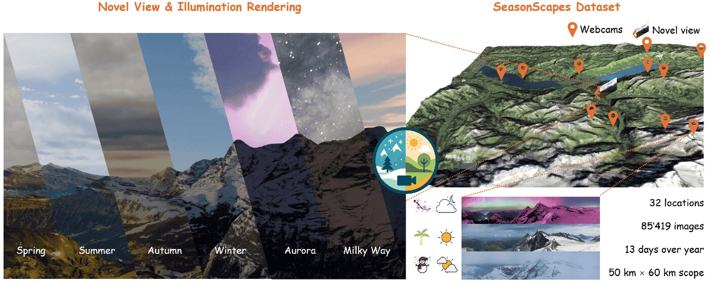
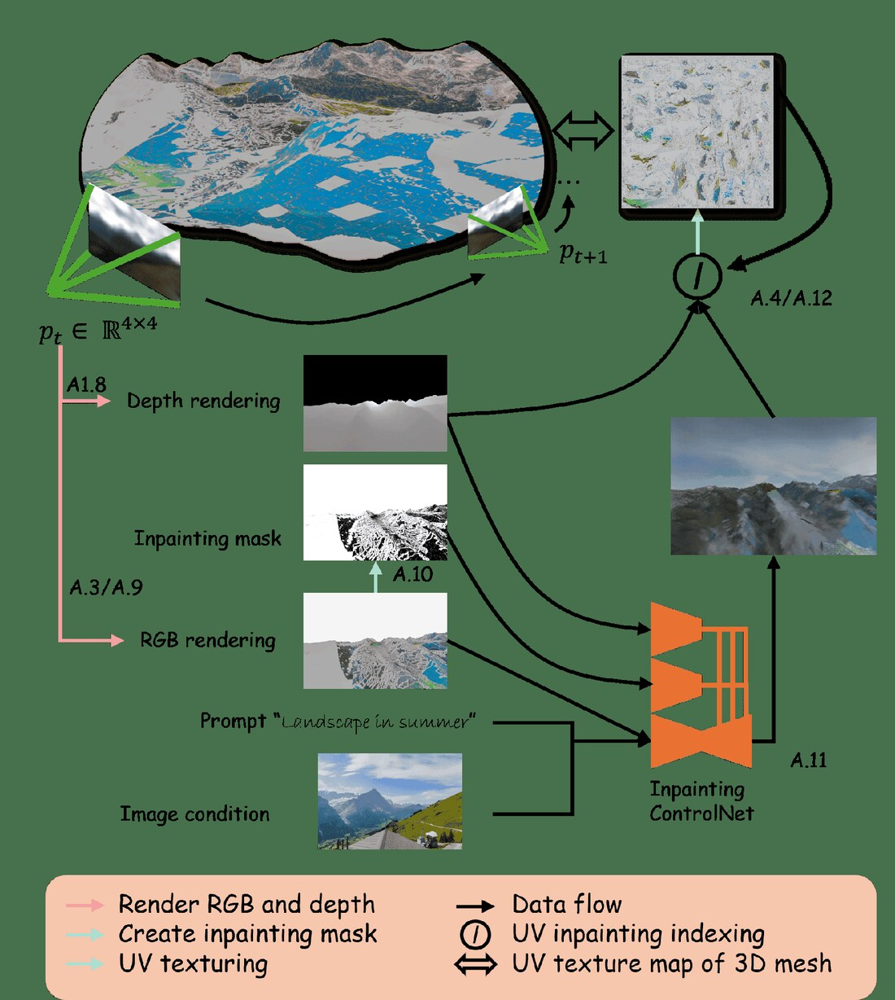
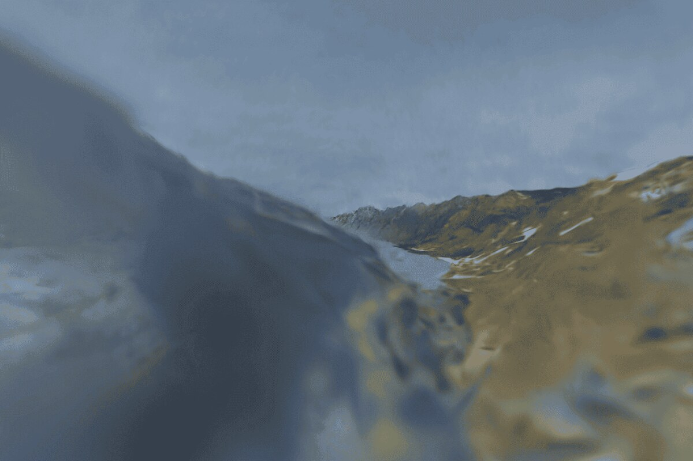

SeasonScapes Paper
Lernen großflächiger neu-beleuchter 3D-Landschaften mit saisonalen Variationen aus spärlichen Webcam-Bildern

Überblick
SeasonScapes ist ein ehrgeiziges Projekt zur Erfassung und Rekonstruktion großflächiger Berglandschaften über mehrere Jahreszeiten hinweg. Mit über 85.000 Webcam-Bildern von 32 verschiedenen Standorten über ein ganzes Jahr verteilt, zeigt dieses Projekt, wie moderne Computer Vision und Machine Learning Techniken eingesetzt werden können, um die Schönheit und Dynamik der Natur zu erfassen und zu rekonstruieren.
Hauptmerkmale
1. SeasonScapes Dataset
Das Herzstück dieses Projekts ist ein umfangreiches Dataset mit Schweizer Berglandschaften. Es umfasst über 50 km × 60 km Gelände und 85.000 Bilder von 32 verschiedenen Webcam-Standorten, aufgenommen über 13 Zeitstempel im Laufe eines Jahres. Dies ermöglicht es, saisonale Variationen und zeitliche Veränderungen zu erfassen.
2. Saisonale 3D-Rekonstruktion
Der Algorithmus projiziert zeitgestempelte Bilder auf 3D-Netze, um temporalbewusste Landschaften zu konstruieren. Diese Methode erfasst nicht nur die räumliche Geometrie, sondern auch die Veränderungen der Landschaft über die Jahreszeiten hinweg - von grünen Sommerlandschaften bis zu schneebedeckten Winterszenen.
3. Diffusion-basiertes Inpainting
Bedingte Diffusionsmodelle werden eingesetzt, um fehlende Bereiche in den Bildern zu ergänzen. Dies ist besonders wichtig, da Verdeckungen durch andere Objekte oder Bereiche außerhalb des Sichtfeldes entstehen können. Die KI-gestützte Inpainting-Methode füllt diese Lücken intelligent auf, basierend auf den umgebenden Kontextinformationen.

4. Neu-beleuchtbare Modelle
Die rekonstruierten 3D-Netze sind mit physikalisch-basiertem Rendering kompatibel, was bedeutet, dass die Landschaften unter verschiedenen Lichtverhältnissen visualisiert werden können. Dies eröffnet neue Möglichkeiten für Anwendungen wie VR, Film und Visualisierung.

Technische Highlights
- Multi-View Fotogrammetrie mit spärlichen Webcam-Aufnahmen
- Saisonale Variation und temporale Konsistenz
- Generative Modelle für Bildvervollständigung
- Physikalisch-basiertes Rendering für realistische Visualisierung
Anwendungen
Dieses Projekt hat zahlreiche potenzielle Anwendungen:
- Digitale Archivierung von Naturlandschaften
- Klimaforschung und Überwachung von Umweltveränderungen
- Immersive VR- und Augmented Reality-Anwendungen
- Film und Entertainment Industry
- Architektur- und Tourismusplanung
Fazit
SeasonScapes demonstriert die Kraft der Kombination von klassischer Computergrafik mit modernen Deep Learning Techniken. Durch die Nutzung von großflächigen Webcam-Daten und innovativen Methoden zur Bildvervollständigung ist es möglich, beeindruckende 3D-Rekonstruktionen von natürlichen Landschaften zu erstellen, die nicht nur räumlich genau sind, sondern auch die zeitlichen Variationen erfassen.
Das Paper ist auf arXiv verfügbar und stellt einen wichtigen Beitrag zur Schnitttstelle von Computer Vision, 3D-Rekonstruktion und generativen Modellen dar.